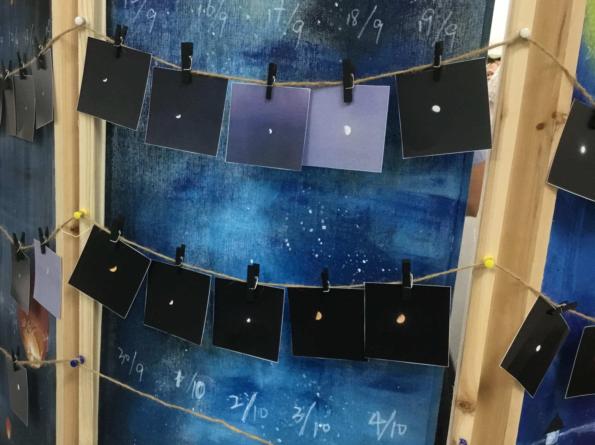
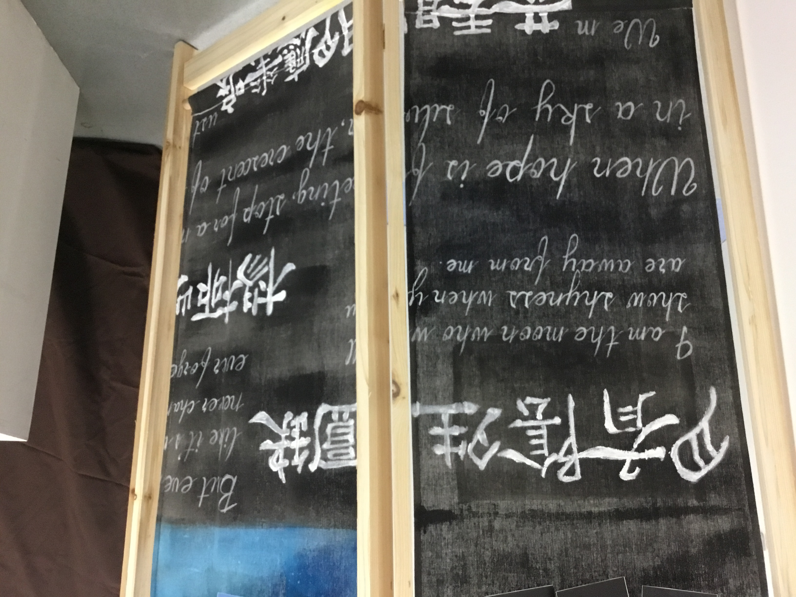
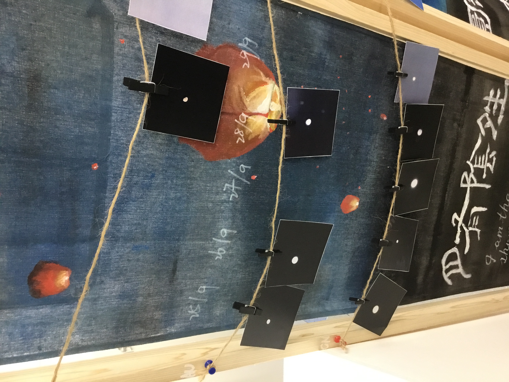

  
This project is a public art about the moon. Since moon is so common in people's lives, it is easier for everyone to find a connection to the artwork.
I asked my friends and families in China to help me taking photos of the moon every day. We spent 2 months to collect a complete cycle of the moon phase in both China and Australia. It was a very strange but interesting feeling that we were over 8,000 kilometers away but we could see the same moon. Then I found poems and quotes in both English and Chinese language, both ancient and modern times, and wrote them at the bottom of the artwork to show different people from different countries and times' feelings about the moon.